Haarstyling tips: Schitter met een unieke look!
Als er een speciale gelegenheid op de planning staat, wil je er natuurlijk op je allerbest uitzien. En laten we eerlijk zijn, je kapsel speelt een…
Artikelen die tot stand kwamen in samenwerking met onze partners.
Als er een speciale gelegenheid op de planning staat, wil je er natuurlijk op je allerbest uitzien. En laten we eerlijk zijn, je kapsel speelt een…

Een van de hoogtepunten van je bruiloft is het aansnijden van de bruidstaart. Maar hoe kies je de perfecte taart voor jullie speciale dag? Er zijn zoveel…

Stukadoors zijn onmisbaar voor elke muur en plafond. Het zijn echte ambachtslieden die zorgen voor het afwerken van de wanden en plafonds van huizen en…

Het ophalen van jouw bruid op de grote dag is een belangrijk moment. Het moment waarop jullie elkaar voor het eerst zien en het begin van een bijzondere…
Als je wilt gaan sporten dan kun je dit niet meteen doen met een niet opgewarmd lichaam met koude spieren. Warm eerst op en ga dan pas vol gas! Opwarmen…
Een nieuwe sleutel in je hand voelt heerlijk, maar tussen de dozen lijkt jouw woonkamer nog ver weg. Juist die lege ruimte geeft je de kans om rustig te…
Een carrière in de gezondheidszorg is voor velen een roeping. Het verlangen om anderen te helpen en een verschil te maken, is een sterke drijfveer. Binnen…

Droom je weleens van witte zandstranden, eeuwenoude tempels en bruisende steden vol geuren en kleuren? Een reis naar Azië spreekt tot de verbeelding, maar…

Sta je op het punt om een andere auto aan te schaffen? Dan denk je waarschijnlijk na over het merk en model, de kleur en de opties. Maar een minstens zo…
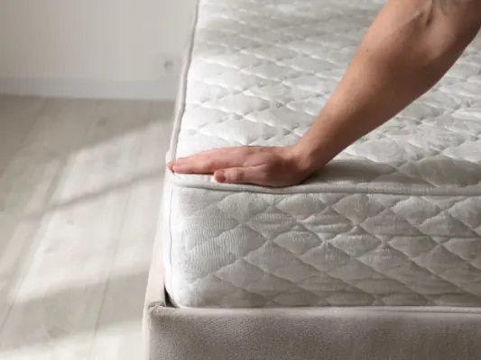
Een goed matras is essentieel voor een gezonde nachtrust. Je brengt namelijk ongeveer een derde van je leven slapend door, dus de kwaliteit van je matras…
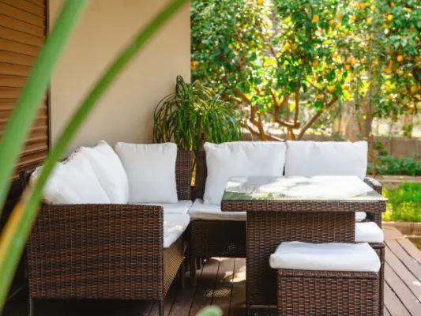
Voor veel inwoners uit Nijmegen en omliggende plaatsen is een bezoek aan Latour Tuinmeubelen in Lith al jaren een vertrouwd ritueel wanneer het…
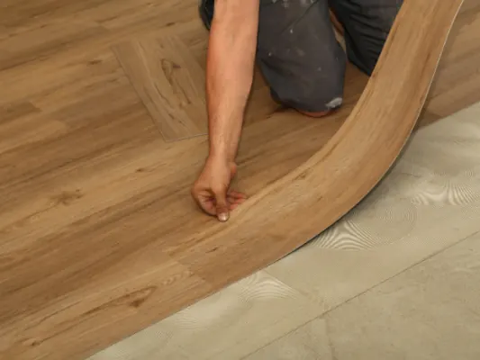
Ben je in Nijmegen of omgeving aan het verbouwen, dan wil je voorkomen dat je vloer de vertraging veroorzaakt. Een pvc-vloer bestellen lijkt eenvoudig…
Nijmegen is typisch een stad van koffiedrinkers. Niet alleen zijn er diverse lokale horecabedrijven en speciaalzaken waar een goede kop koffie de spil…
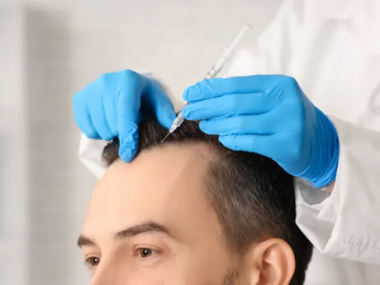
Wanneer u overweegt om uw haarlijn te herstellen of kale plekken op te vullen, is de eerste vraag die in u opkomt waarschijnlijk: “Wat gaat dit mij…
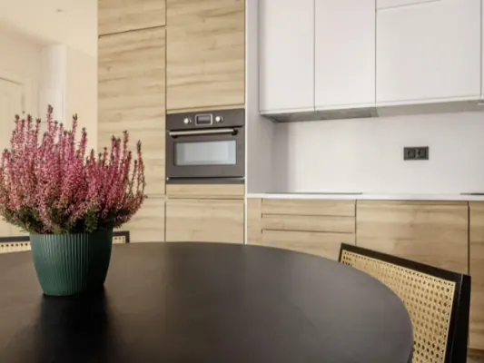
Ben je op zoek naar een keuken die zowel stijlvol als functioneel is? Dan is een minimalistisch keukenontwerp misschien precies wat je nodig hebt. In dit…
De koppeling tussen geld en duurzaamheid Duurzaam leven gaat niet alleen over zonnepanelen, biologische voeding of minder plastic gebruiken. Het gaat ook…
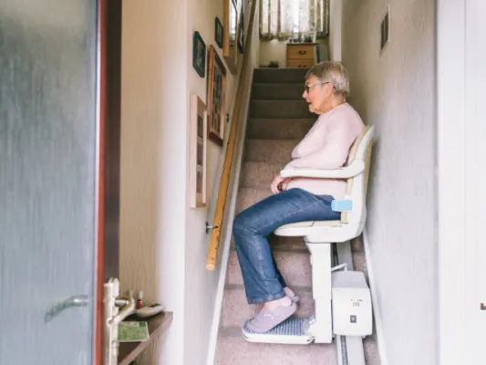
Nijmegen draagt de titel European Green Capital niet voor niets. Van de groene oevers van de Waal tot de duurzame initiatieven in de wijken: bewoners van…
Ben je klaar om je huis een slimme upgrade te geven? Dan zijn zigbee dimmers misschien wel de perfecte oplossing voor jou. Deze innovatieve technologie…
De Nederlandse vlag is een symbool dat iedereen in Nederland wel kent. Maar weet je ook hoe deze vlag is geëvolueerd door de eeuwen heen? Laten we samen…
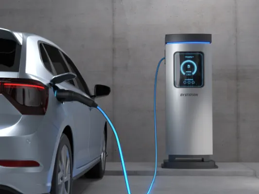
Waarom raakt je auto-accu leeg bij nat weer? Het probleem ontstaat door een combinatie van drie factoren: vocht dat elektrische verbindingen aantast en…
Het is een herkenbaar probleem voor organisaties die klanten of gasten ontvangen: hoe zorg je dat ze gebruik kunnen maken van je wifi? Je wilt graag…
Of je nu net een auto hebt gekocht of al jaren rijdt: je autoverzekering heeft meer invloed op je maandelijkse lasten dan je misschien denkt. Veel mensen…
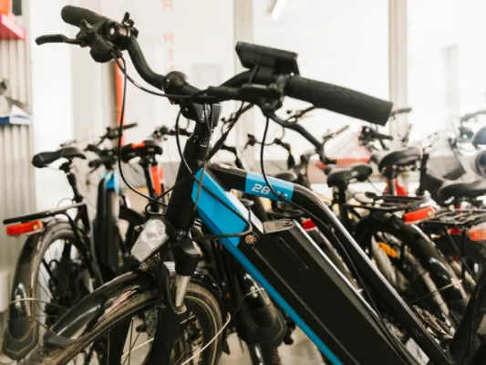
De elektrische fiets is niet meer weg te denken uit het straatbeeld. Of je nu dagelijks naar je werk fietst, ontspannen toertochten maakt of graag zonder…

Een goed ingerichte keuken is meer dan alleen een functionele ruimte. Het is de plek waar maaltijden worden bereid, gesprekken worden gevoerd en waar…
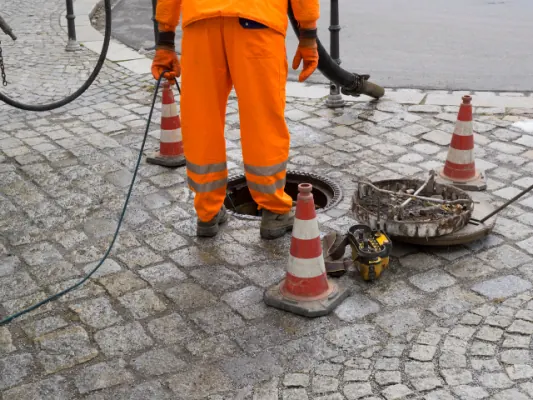
Het begint vaak klein. Een wasbak die nét iets langzamer leegloopt. Een borrelend geluid uit het doucheputje. Een geur waarvan je eerst denkt: “dat…
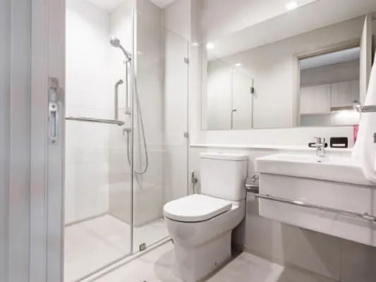
Een lange werkdag, een druk gezinsleven of gewoon behoefte aan een momentje voor jezelf: het speelt zich verrassend vaak af op dezelfde plek. De badkamer…
De inflatie was de laatste 5 jaar zo’n 25% in totaal. Een ongekende geldontwaarding in korte tijd. En dat terwijl de rente op spaargeld laag is. In de…
Naar schatting zijn twee miljoen mensen in Nederland verslaafd. Aan verdovende middelen, maar ook bijvoorbeeld aan gamen of gokken. Dit is dus een steeds…
Als iemand overlijdt, moet er een uitvaart georganiseerd worden. Dit is geen eenvoudige klus en veel mensen onderschatten wat er allemaal bij zo’n…
Als ondernemer in Nijmegen moet je met de tijd meegaan. Dat betekent dat je soms afscheid moet nemen van het oude en hallo moet zeggen tegen iets nieuws…
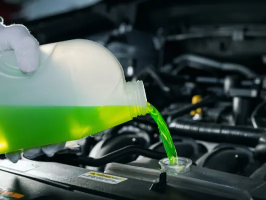
Klimaatverandering is een belangrijke factor geworden voor autobezitters over de hele wereld. Extreme weersomstandigheden zoals extreme hitte of vorst…
Het herkennen van tekenen van slijtage aan de remschijven van je auto is cruciaal voor de veiligheid op de weg. Remmen zijn een van de belangrijkste…
Het installeren van een dakkoffer is een slimme en praktische manier om extra opslagruimte te creëren tijdens uw reis. Of het nu gaat om een vakantie, een…
Ga je op korte termijn een keer een heerlijke barbecue organiseren voor je beste vrienden of familie? In dat geval pak je maar al te graag een keer goed…

Heb je ooit het gevoel gehad dat alleen de perfecte look je zelfvertrouwen een flinke boost kan geven? Wij hebben het geheim ontdekt: permanente make-up…

Welkom in de wonderbaarlijke wereld van permanente make-up ! Je hebt vast wel eens gehoord van deze speciale techniek die ervoor zorgt dat je altijd…
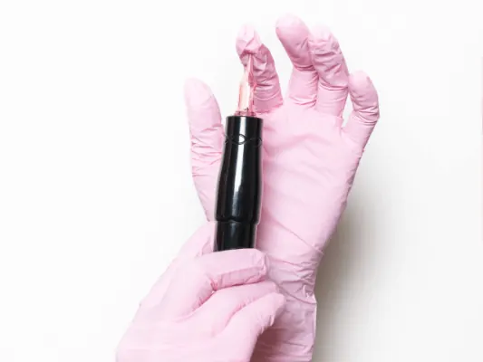
Het is tijd om de mythe te doorbreken dat permanente make-up alleen iets is voor vrouwen. In deze blog duiken we dieper in op het onderwerp en ontdekken…

Ben je het zat om elke ochtend kostbare tijd te verspillen aan het perfectioneren van je make-up? Overweeg dan eens om je te verdiepen in de wereld van…

We nemen je in deze blog mee in de wereld van nagelverzorging! Of je nu een nagellakliefhebber bent of gewoon je nagels gezond en sterk wilt houden, het…

Een massage is een geweldige manier om te ontspannen, stress te verminderen en je algehele welzijn te verbeteren. Maar met zoveel verschillende soorten…

Niets is zo vervelend als een bad hair day die je humeur verpest en je zelfvertrouwen naar beneden haalt. Maar maak je geen zorgen, we hebben een aantal…

Tijdens die negen maanden vol avontuur en wonderen mag je haar niet vergeten worden. Sommige vrouwen merken dat hun haar ineens van textuur verandert…

Als je op leeftijd bent, is het vinden van de juiste persoon om voor je haar te zorgen en te stylen van groot belang. Geen zorgen, we hebben alle…

Heb je ooit naar je voeten gekeken en gedacht: “Wow, deze voeten verdienen wat liefdevolle aandacht!” Wel, je bent op de juiste plek beland. In deze blog…

Welkom in de fascinerende wereld van pedicurebehandelingen! In Nijmegen kun je genieten van een breed scala aan plekken waar jij en je voeten kunnen…
Lekker tuinieren? waarbij je met planten, struiken en bomen in de weer bent. Klinkt romantisch, maar in werkelijkheid is het ook keihard werken. Ja, je…

Een gezond dieet is essentieel voor een gezonde levensstijl. Het kan echter moeilijk zijn om te weten waar je moet beginnen als je je dieet wilt…

Hoe gaaf is het om een meubelstuk in huis te hebben dat niemand anders is. Bijvoorbeeld een unieke eettafel, een lust voor het oog en een uniek…

Een huis kopen kan een spannende en overweldigende ervaring zijn, vooral als het gaat om het financieren van je huis en zeker als het je eerste keer is…

Ben je op zoek naar een manier om je zelfbeeld en zelfvertrouwen te verbeteren? Overweeg dan permanente make-up! Permanente make-up kan niet alleen je…
Je loopt vast wel eens een juwelier voorbij, of je blijft even turen in de etalage. Misschien probeer je dan een reden te verzinnen voor zo’n bijzonder…
De een draagt een bril om beter te zien en de ander als bescherming tegen de zon. Maar zie maar eens de perfecte bril te vinden, en hoe doe je dat als je…
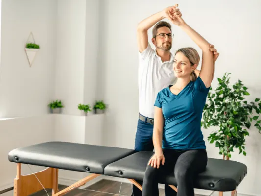
Fysiotherapie is gericht op het behandelen en verminderen van pijn en het verbeteren van bewegingsmogelijkheden bij klachten. Het kan variëren van het…

Op je trouwdag wil je er natuurlijk op je allermooist uitzien en daar hoort een perfect kapsel bij. Maar hoe krijg je die perfecte krul en hoe maak je een…
Een trouwdag is een van de belangrijkste dagen van je leven, en het kiezen van de juiste muziek kan het verschil maken tussen een goede en een geweldige…
Je bruiloft is een van de meest speciale momenten in je leven en je wilt er zeker van zijn dat het onvergetelijk wordt. Een leuke en unieke manier om deze…

Natuurlijk is het plannen van een bruiloft een leuke en spannende tijd, maar het kan ook behoorlijk stressvol zijn. Er komt zoveel bij kijken: het regelen…

Als je gaat trouwen, wil je later nog na kunnen genieten. Daarom is het zo belangrijk om een goede fotograaf te vragen om de mooiste plaatjes te vangen…

Niet schrikken, maar er komt een heleboel kijken wanneer je de dag van je leven gaat voorbereiden. Het plannen van deze dag kan simpel gezegd…
Je trouwdag is een van de meest bijzondere dagen in je leven, en de jurk die je draagt is een belangrijk onderdeel van deze dag. Als je gaat trouwen in…

Natuurlijk is het uitzoeken van de juiste ring een belangrijk onderdeel bij het plannen van een bruiloft. De ring is immers het symbool van de liefde…
Wat kan een visagiste allemaal voor jou doen? Een visagiste kan jouw trouwdag naar een hoger niveau tillen . Door haar kennis en vaardigheden kan ze jouw…
Op jullie trouwdag zijn er zoveel prachtige momenten die je wilt vastleggen en koesteren voor de rest van je leven. Het aannemen van een professionele…
Een droombruiloft begint met het vinden van de perfecte locatie, en in de omgeving van Nijmegen zijn er talloze prachtige plekken waar je kunt trouwen…
De werkelijkheid is toch echt anders dan de titel doet vermoeden. Met alle goede voornemens nog vers in het geheugen, maar met alle…
ICT-carrières bieden een unieke mix van uitdaging, flexibiliteit en beloning. Steeds meer mensen kiezen voor een carrière in de informatietechnologie…
Op 9 december berichtte de Rabobank dat de boodschappen in 2023 nog duurder gaan worden. En dat terwijl de gemiddelde consument binnen een paar maanden…
De energieprijzen zijn op dit moment torenhoog. Op dit moment betaal je drie tot vier keer zoveel als een jaar geleden. En aan de prijsstijging lijkt in…

Stel: Je begint met ondernemen en de eerste facturen heb je inmiddels verstuurd voor je werkzaamheden. Dat is leuk ondernemen! Nu is het een goed moment…
Bij de meeste mensen tovert de gedachte aan de feestdagen een glimlach op hun gezicht. Met het hele gezin de kerstboom versieren en daarna genieten van…
Omdat ze deel uitmaken van ons leven hebben onze huisdieren ook het recht om goed verzekerd te zijn, zodat ze een beter leven kunnen leiden. Steeds meer…
Nu we langzaam richting het einde van het jaar gaan en we zien dat alles van woning huren en kopen, de energierekening, de boodschappen, de auto…
De verwachte revolutie in de game markt kwam niet in 2021 en 2022. In zekere zin was het een periode van stagnatie. Veel titels kwamen veel te laat, en…

Kun je afvallen door de sporten? Dat is de vraag die velen bezighoudt. Een platte buik hebben, iedereen droomt ervan! Er zijn veel verschillende manieren…
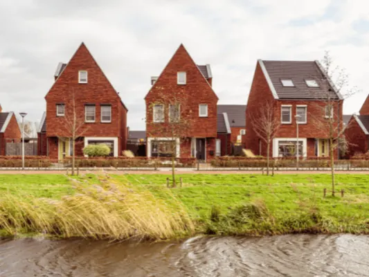
Wil je een huis kopen in Nijmegen en/of je hebt al heel wat gespaard op je bankrekening, maar je hebt nog niet genoeg om volledig dat mooie huis of leuke…
Vakantie is ontspannen, iets om naar uit te kijken, en helemaal als je op reis gaat om nieuwe gebieden, landen, culturen, plaatsen of gebruiken te…
Je bent nooit uitgeleerd, ook in Nijmegen kun je nog eindeloos veel leren! Wat is er leuker dan je bestaande kennis of vaardigheden uit te breiden met een…
Door een cursus te volgen kun je nieuwe kanten van jezelf ontdekken of je sterke punten verbeteren. Het is korter dan een opleiding en wat je leert is…